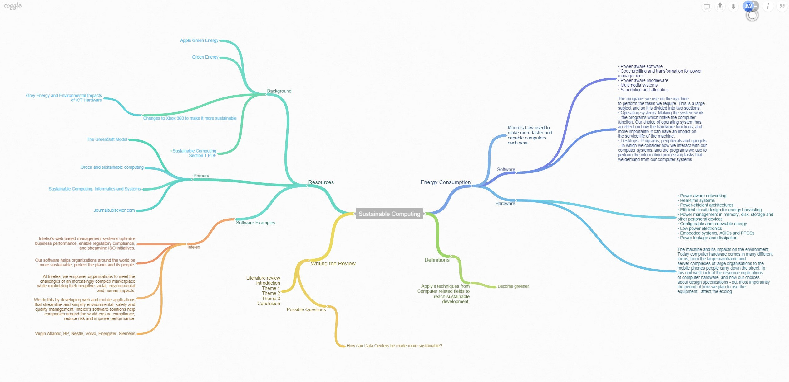
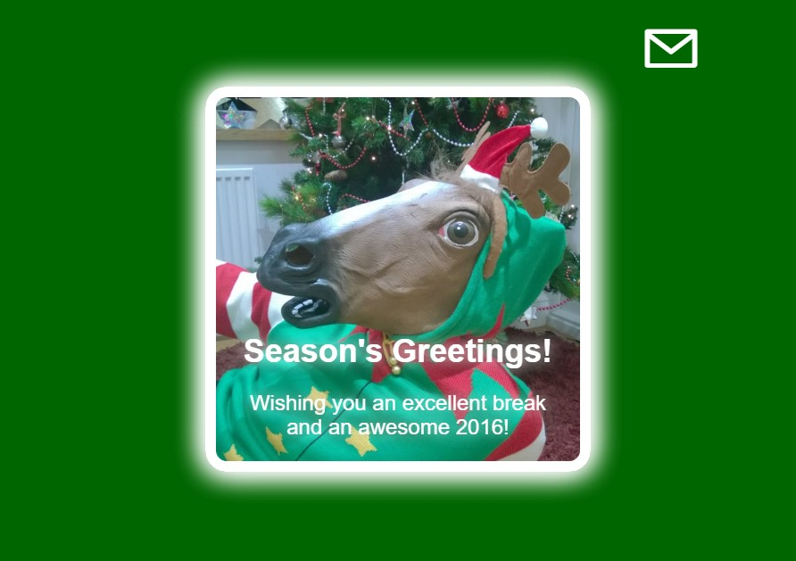

I have completed this logbook week by week.
Once you have finished reading each week, you can close it by click on its date and title.
Hover over images to make them bigger
25/09/15 - Virtual Machine
- This lesson I started and configured my Virtual Machine for the first time, I used Secure Shell to create a HTML page so I could view some things on my server using the IP Address.
- In addition to the Virtual Machine, I also tried out some text editors to use in the coming lessons.


02/10/15 - HTML
- In this practical session I coded my first webpage on Atom and uploaded it onto WinSCP inorder to see it on my server.
- To achieve this I started my web server in the same way as the previous session, and found the file and made it a HTTP server. By default the server listens out for the file name index.html

09/10/15 - CSS
- In this practical we created a CSS style sheet and linked it to the HTML that we also created in the practical. The purpose of this was to use CSS to style how the HTML will look when opened on a browser.
- I have done HTML and CSS before but this lesson went into detail on descriptive HTML and CSS. This has the purpose of making the HTML easier to read for different designers and also gives it a better SEO rating.
- I also learnt more about type selectors such as id, class and style and properties such as padding, border, colour and text-align.


16/10/15 - Literature Review Research
- In this practical we were introduced to the Literature Review coursework on Sustainable Computing. We had the first chance to research what part of Sustainable Computing we would settle on.
- I created a mind map on Coggle (below)
- 
- After researching I decided on the topic of Hardware and Sustainable Computing as my research area.
23/10/15 - More Literature Review
- In the fifth lesson we furthered our literature review.
- I decided on the Key themes and what I was going to write about.
- These were:
-
- How can hardware be amended to become sustainable?
- The importance of reducing the energy used by hardware
- The increased use of mobile devices and smaller hardware
- I also found journals and academic writings on the topics around my themes
- The last thing that I achieved this week was to write the first draft of my Literature Review
30/10/15 - Reading Week
- This week was a reading week so I spent the hour in the Library doing research on and reading around my Literature Review topic.
- I also completed my second draft in this week, while also adding an introduction.
- In addition to this I caught up on all work that I hadn't been able to complete. This meant that I was now up to date with all work and could focus my time soley on the Literature Review
06/11/15 - Using Media
- In this practical we covered the basics of media on a website. This included videos and images.
- Using the video tag we added a video that we made into our websites (a template website was given). The video had to be in the correct file type to work on the browser I was using (Chrome).
- In the lecture we learned that different browsers use different file types. For example the .mov file type is patented by Apple and works on Safari, yet other file types may not. Due to this the HTML must include different files for one video, containing different file types.
- Additionally we added an image to our website. We also added a style attribute so that the image would change to a different one depending on the size of the window open.
13/11/15 - Using Media 2 (SVG)
- In this practical we learnt more about using media in a website, and also about using SVG type images.
- SVG type images are the best type of image to use on a website as they are extremely scalable without becoming pixelated but also because they take up a tiny amount of space on a server.
- Additionally, in the lecture we learnt about the different colours that could be used on a website, or the Websafe Palette.
- During this week I did further work on my Literature review. This time I handed in a draft to my Personal Tutor so that she could give me feedback on the work I had completed.
20/11/15 - Design
- This week we learnt that the first stage of website building is to understand why you are building the site. E.g. what its purpose is and who is the target audience.
- In the practical we used a process of "Reverse Identifying". This is a review process for existing websites that looks into the questions you will face when designing a new website.
- We were given a list of websites to evaluate, and also questions to think about when looking at them to decide on their purpose, target audience and aesthetics and technicalities.
- The questions we were asked included:
-
- Based on first impressions what do you think is the purpose of the site?
- Is the purpose stated?
- Was it easy to identify the purpose of the site?
- Who do you think the target audience of the site is?
- Was it easy to identify the target audience
- What is your emotional response to the site?
- Do you think the site was built in a single step or has it evolved over time?
27/11/15 - Standards
- This week we learnt about the standards used in HTML and what elements are used.
- The lecture covered that standards were everywhere and that they have been created to be followed so that there is uniform to what we create.
- The practical showed us that we had to use the correct HTML5 standards and also how to validate them using validator.w3.org.
- This website has been created in accordance to these guidelines.
- Some standards covered included: "em, i, b, u, strong" and "body, article, section, nav, aside, header, footer"
04/12/15 - Productivity and Efficiency: Editors
- This practical showed us the importance of having a text editor that we feel comfortable with so that we would be able to increase our productivity.
- The focus was on the text editor Atom, and we were shown in the lecture all of the tools that it has and could have. This served the purpose of helping us work more efficiently.
- To do this we installed atom and downloaded some tools that were given to us on the tutorial file, we also gave atom some snippets which I found particularly useful as they made it easier to create a HTML document.
- Due to what I have discovered this week, I will continue my website on the text editor atom. I currently use Notepad++ but feel that Atom is a lot more modern and will fit my needs more.
- Additionally we did further work on our website.
11/12/15 - Christmas Week
- In this weeks lecture we were shown how to build a webpage in an hour.
- The design was more of a Christmas card for students than a conventional site.
- 
- In the practical we were given resources to set us up for the Christmas break, this included the website created in the lecture.
- We also did more work on our own websites.
08/01/16 - Basic Scripting (Javascript)
- In this week's lecture we saw a canvas of stick figures being created and animated to show us how you can use JavaScript on websites.
- In the practical we downloaded the code from github, adding it to our server. After doing this we analysed the code, trying to find the specific part which was the 'anti-cheat' code.
15/01/16 - Basic Scripting (PHP)
- We were shown the other end of scripting online with PHP.
- Using PHP we created a Hello World program which used the function ECHO to display the text Hello World on a website.
- We also used it at the top of the browser to do simple math calculations.
- The final thing we did was see how we could collect data from forms.
22/01/16 - Usability
- This weeks lecture talked about why usability is important on websites.
- It focused on:
-
- What is usability? - How easy something is to use.
- Why is it important?
- User centered approach to design.
- We found that good usability was centered around:
-
- Clear Navigation
- Easy to learn interface
- Error Prevention
- Organised Layout
- Also touched on was how to organise our content.
- We did a card sorting exercise in class. Each card had a different kind of amenity and we had to put them into groups based on a group vote. The purpose of this was to show us what went well together and how to categorise content on a website.
29/01/16 - Usability 2
- This week we continued to learn about how Usability can affect websites.
- This week we researched:
-
- Navigation and Orientation
- Design of web pages
- Mobile Design
- Incorporating Usability
- We were shown that websites should be laid out in such a way so that the user can build a mental map of how the content is laid out.
- We were also told about media queries and responsive design, usually using columns.
- The lecture also touched on usability mistakes such as neglecting user aims, mobile users and distracting images.
05/02/16 - Accessibility
- During this weeks lecture we had a guest speaker who worked on the NHS's website
- He informed us that we should take care to make our website easy to use for people with all disabilities
- This included:
-
- Making it easily read by a screen reader, for example using aria-labels on elements
- Choosing colours carefully as to not confuse the colour blind
- When he taught us about colour choice, he switched between a yellow box, to a box that changed from red to green when sufficient text was entered. At this point, Rich, who is colour blind, pointed out that he didn't see the change at all.
- In the practical we simulated impairment
- This involved us wearing special glasses that changed our vision and enabled us to simulate using our websites as if we had eye issues.
12/02/16-25/02/16 - Finishing Website
- From the 12th of February right up to the due date for the website I focused all my time on finishing it.
- This included me getting feedback from other coursemate and friends to make sure it was easy to navigate and read.
- In this week I also added the finishing touches and uploaded it to my server to be handed in.